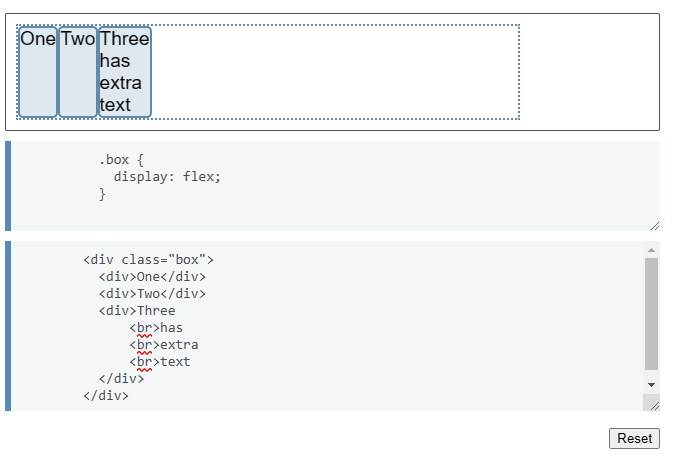

Flex Box
Es una de las propiedades de CSS display, que nos permite colocarle mejor diseño a nuestra pagina web.
El principal objetivo detras del diseño flexible es dar la capacidad de poder alterar
el ancho como el alto de los articulos que uno ha indicado.
Es un diseño apropiado especialmente para aplicaciones o diseños a pequeña escala.
Al trabajar con el Flexbox se necesita pensar en dos terminos de ejes, el eje principal y el eje cruzado.
Eje principal
Se define con flex-direction el cual tiene 4 valores que se le pueden asignar.
- row
- row-reverse
- column
- column-reverse

Con ese ejemplo de desea mostrar las siguientes propiedades de Flexbox:
Con justify-content es una propiedad que nos ayuda alinear los items que deseamos arreglar.
Con eso se tienen los siguientes valores para poder realizar los adjuntes.
- space-evenly
- flex-start
- flex-end
- center
- space-around
- space-between
Listas
Las listas nos permiten a los desarrolladores web poder agrupar un conjunto de varios elementos que tengan que ir en listas
En las listas tenemos dos tipos de listas
Listas Ordenadas
Las listas ordenadas vienen numeradas las opciones las cuales se realiza con la etiqueta "ol"
Ejemplo:

Listas Desordenasdas
Las listas desordenadas se puede realizan con la etiqueta "ul", dentro de esta misma se puede ver de la siguiente manera.
Ejemplo:

Listas de descripción
Para estas listas se tienen los siguientes termimos, primeramente se inicia con "dl" "dt" "dd", esto con el fin de mostrarlo de la siguiente manera.
Enlaces
Los enlaces se pueden encontrar en cualquier lugar dentro de internet, estos permiten la conexión entre varias paginas o para acceder a una pagina web.
La etiqueta para poder crear los enlaces es "a" dentro de eso se genera la siguiente "a href ="..." ", dentro de esas comillas se podra colocar enlace que uno desee.
Ejemplo:
Teniendo claro como generar los enlaces se tiene variedad de maneras para poderlos combiar y acceder a paginas web.
Como los siguientes.
- Botones
- Imagenes
Actividades
Actividad 1
Para poder realizar la primera actividad, contará de enlaces, se accede desde:
Ejercicio 1 EnlacesActividad 2
Para poder rrealziar la segunda actividad, constará de listas, se accede desde:
Ejercicio 2 Listas